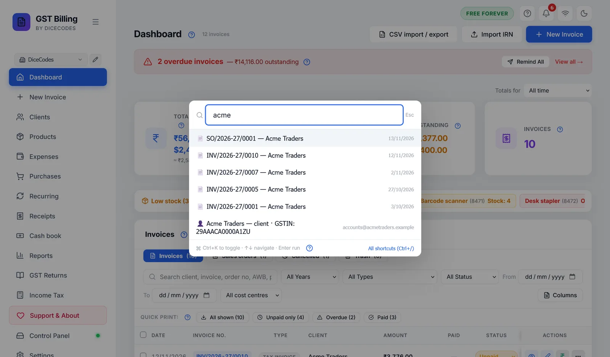
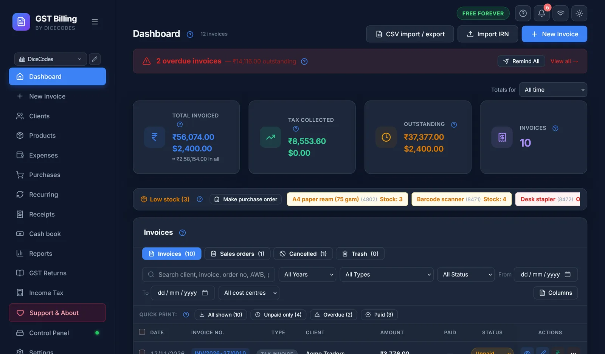

Getting around the app
The sidebar, switching business, notifications, quick search with Ctrl + K, keyboard shortcuts and dark mode.
#Support & About
Who makes the app, and how to help it grow. Free ways come first: star it on GitHub, tell another business, report a bug or ask for a feature. If you want to give money, scan the UPI QR with any UPI app, for any amount. The page also lists what Abhishek Agrahari builds for businesses: custom software and web apps, changes to this app, setup and data migration, support plans, AI integration and automation, and mobile apps.
The app stays free whatever you choose. Nothing is locked, and nothing is ever printed on your invoices. Once you have made 10 invoices, the Dashboard shows a small support card once a day; Not today hides it until tomorrow and Hide for 7 days for a week.
Scanning the QR fills in the payment note "Bharat GST Free Billing support - your business name", so Abhishek Agrahari can thank you; untick Include my business name to leave it out. The page also shows how much users have given so far and what it is going towards.
Once a month at most, a one-line note at the top of the app asks for a star on GitHub. ✕ hides it for 30 days; Star on GitHub or Already starred hides it for good. It never appears while you are making an invoice.
#Switching business
Click the business name at the top of the sidebar to open its list. Edit business details opens your business's details in Settings. With more than one business saved, choose another to switch. Every screen changes to that business's invoices, purchases, expenses, receipts, recurring invoices, reports and returns. Manage profiles… opens Settings.
#Notifications
The 🔔 bell at the top right of every screen has a small red count when something needs you. It is your daily to-do list: who has not paid, what is due soon, which return to file, what to re-order. The app works it out by itself when it opens and again every 10 minutes; nothing is sent to you by SMS or email.
Click it to open the Notifications window. Each line is a button: click it and the window closes and takes you to the screen where you deal with it.
| Line | What it means | Clicking it opens |
|---|---|---|
| 🔁 N recurring invoices due to be made | A recurring template is due but its invoice was not made (the app was off on that day, or it failed). Open Recurring and use Generate Now. | Recurring |
| 🔁 N recurring invoices auto-generated today | The app made invoices from your recurring templates today. Check them and download the PDFs. | Dashboard |
| ⚠ N overdue invoices | Tax invoices, bills of supply and composition bills not fully paid whose Due Date has passed. The first three numbers are shown. Quotations, proformas, challans, credit notes and cancelled invoices never appear. | Dashboard (see Overdue invoices and reminders) |
| ⏰ N invoices due in next 3 days | Unpaid sales whose due date is today or within 3 days, with the client's name. A good time for a polite reminder. | Dashboard |
| 📋 N GST filings due in next 10 days | GSTR-1, GSTR-3B, TDS, TCS, advance tax and ITR dates coming up, with how many days are left ("today" or "4d"). A month's GSTR-1 or GSTR-3B marked Filed on GST Returns (month view) is left out. | GST Returns (see the filing guide) |
| 📦 N products low on stock | Products at or below your low-stock limit (5 unless you changed it), with how many are left. Not shown when stock alerts are off in Settings. | Products (see Low stock) |
The same things show as red dots on the menu items, so you can see where to go without opening the bell. Invoices and recurring templates are those of the business you have open.
When nothing needs you, the window says All clear ✨ — nothing needs your attention right now.
Mark all as read clears everything shown and the count goes to zero. The app remembers exactly what you cleared, so a line comes back by itself only when something changes: a new invoice becomes overdue, a different product runs low, or the stock number changes. Clearing does not mark any invoice as paid; record the payment on the Dashboard for that.
An invoice I was paid for still shows as overdue. The payment is not recorded yet. Record it with the ₹ button on the Dashboard and the line goes away at the next check.
No due-date reminders at all. Only invoices with a Due Date can become overdue or due soon. Set one in Invoice Details, or give the client payment terms.
The filing dates do not match my returns. The dates are the usual monthly due dates. If you file quarterly (QRMP) or the government extends a date, go by the GST portal.
#Quick search: Ctrl + K
Click the Search… box at the top of every screen (in a narrow window or on a phone, the magnifying glass at the top), or press Ctrl + K anywhere, even while typing, and start typing. You can:
- go to any screen, or start a new invoice;
- open an invoice by its number or client;
- find a client by name or GSTIN, or a product by name or HSN, which opens their list;
- jump to Settings, switch dark mode, or see what is new in an update;
- ask a question, such as
how do I add my logo,credit noteorbill kaise banaye(see below); - find a page of this guide by its title.
- Open itClick Search… at the top, or press Ctrl + K (Mac: ⌘ + K). A box opens with Search, or ask: how do I…
- Type a few letters or wordsFor example
gst, an invoice number such as0012, part of a client's name, or a question. The list narrows as you type, in groups: Screens, How do I…, Settings, your Invoices, Clients and Products, and Help pages. When what you type looks like an invoice number or a name, your invoices, clients and products come first. - Pick oneMove with ↑ ↓ and press Enter, or click it. The box closes and the screen opens.
Esc, or a click outside the box, closes it. If nothing fits you see Nothing matches "…": try fewer words, or click search the user guide. All shortcuts (Ctrl+/) at the bottom opens the list of keyboard shortcuts.
How do I… answers
With the box empty, a few common questions are listed under How do I…; type a few words of your question to find the others (about 85: invoices and credit notes, payments, WhatsApp, GST returns, stock, backups, phone, updates and more). Typing mistakes and everyday words such as bill, challan or udhaar work too. Each answer has two ways to go:
| You do | What happens |
|---|---|
| Click the question, or press Enter | Take me there: the app opens the screen or Settings part where it is done (the line under the question says where, for example Opens Settings → Branding) and outlines the box for a moment. |
| Click Guide on its right, or press Shift + Enter | Opens the part of this guide that explains it, in your browser. It needs the internet. |
If the screen it needs is switched off in Settings, Features, Features opens instead and a message says what to turn on. Results under Help pages are pages and sections of this guide; they open in your browser too.

#Keyboard shortcuts
The list is also in the app: click the ? button at the top right and pick Keyboard shortcuts (Ctrl+/). The same button's User guide (opens in your browser) opens this guide.
| Ctrl + K | Quick search (the Search… box) |
| Ctrl + N | New invoice (when you are not typing in a box) |
| Ctrl + S | Save the invoice (on the invoice screen) |
| Ctrl + P | Download the PDF (on the invoice screen) |
| Ctrl + Enter | Add an item row (on the invoice screen) |
| Ctrl + Shift + D | Copy the last item row (on the invoice screen) |
| Ctrl + Shift + F | Hide or show the preview (on the invoice screen; remembered) |
| Ctrl + Shift + L | Lock the app (when a PIN is set) |
| Ctrl + / | Show or hide the Keyboard Shortcuts window, which lists these |
| Esc | Close a dialog |
| Enter | Confirm a dialog |
On the invoice screen there are more: see Keyboard shortcuts on this screen. On a Mac, use ⌘ instead of Ctrl.
#Dark mode
The moon button at the top right of every screen switches the app to dark colours, and the sun button switches back. Invoices and PDFs always print in their normal colours. The app's own colour, the text size and compact lists are in Settings, Appearance.

#Opening it like a desktop app
It already is one. The Bharat GST Free Billing icon (the blue B) on your Desktop and in the Start menu starts the app and opens it in its own window, with no tabs or address bar.
Don't use the browser's own Install app button (in Chrome or Edge's address bar). That makes a second icon which opens a window but cannot start the app, so after a restart it only shows "Needs a Quick Start". If you have one, right-click it and choose Uninstall.
#"Needs a Quick Start"
If the app's engine is not running, the page says Bharat GST Free Billing Needs a Quick Start. Your data is safe. Double-click the Bharat GST Free Billing icon on your Desktop or in the Start menu: it starts the app, and the page carries on by itself once it is running. An app icon made by Chrome or Edge cannot start the app; use ours, and remove the other one (right-click it, then Uninstall).